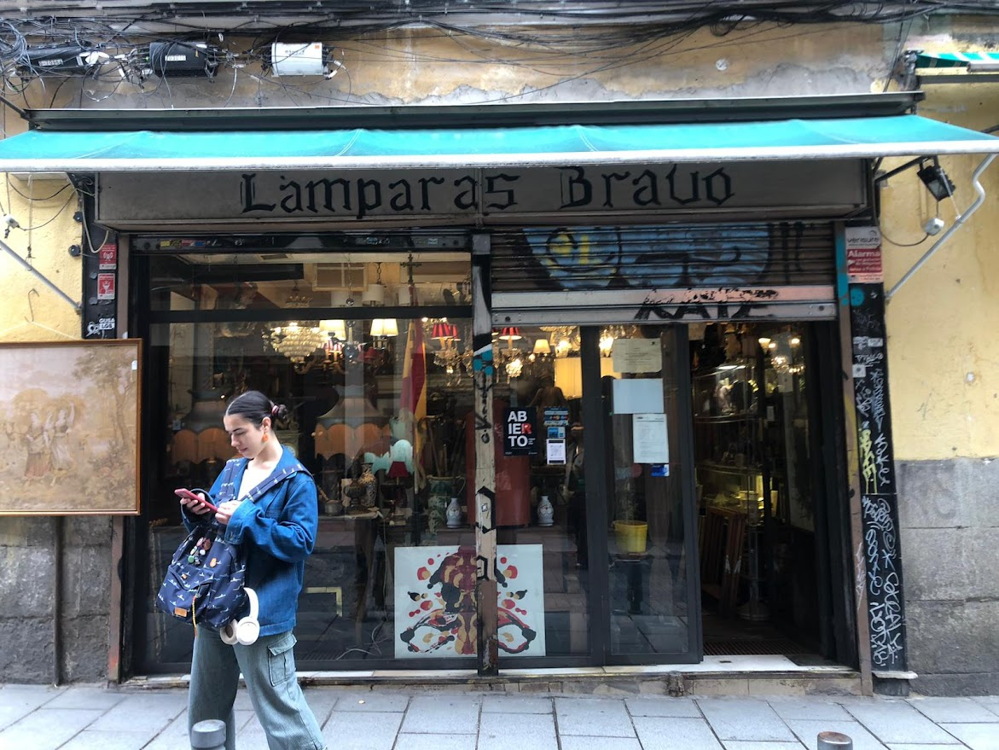
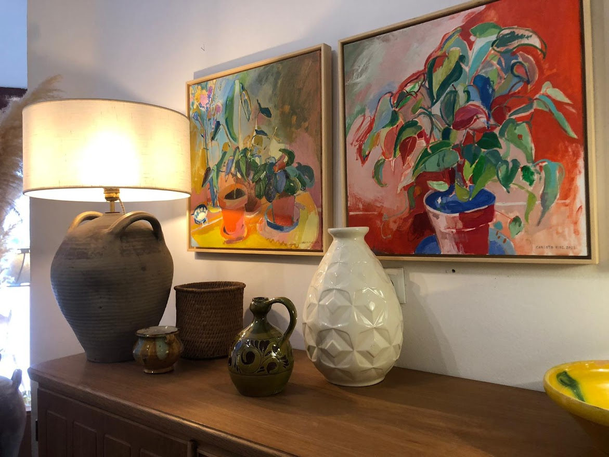
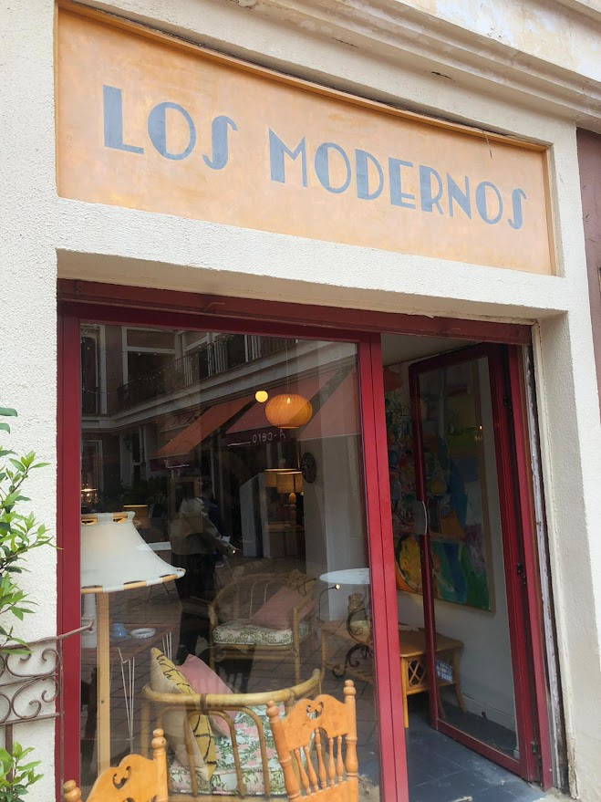
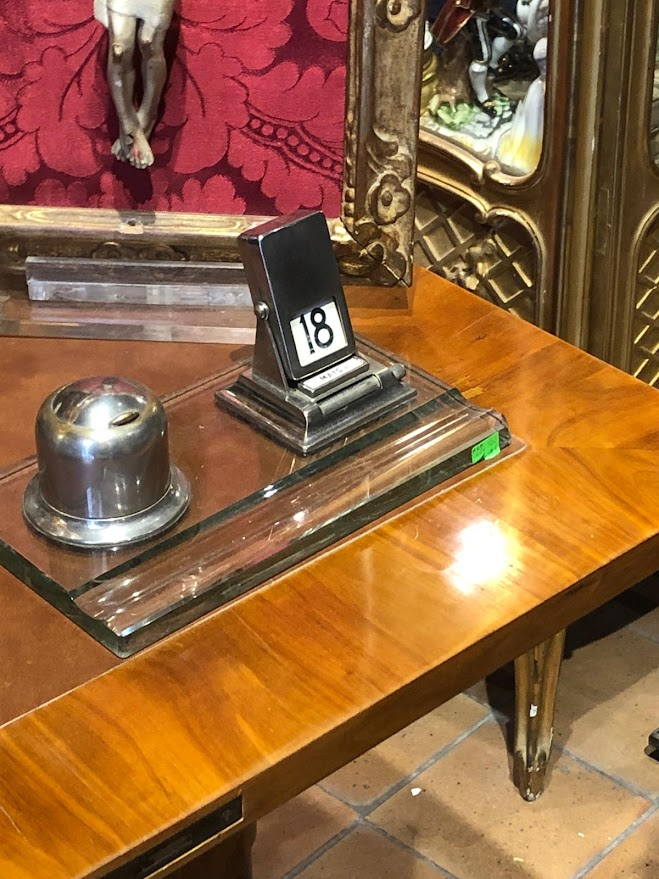

Diseño en el Rastro
- Visita por tiendas de antigüedades y otras
El día 8 de mayo pasamos una mañana en el Rastro. Recordatorio de que no salgo suficiente a pasear por Madrid. Y menos a interactuar con las personas de las tiendas, aunque la mayoría están más que listas para conversar.
Adjunto algunas fotos de la mañana ( gracias lucía por echar fotos ) .



